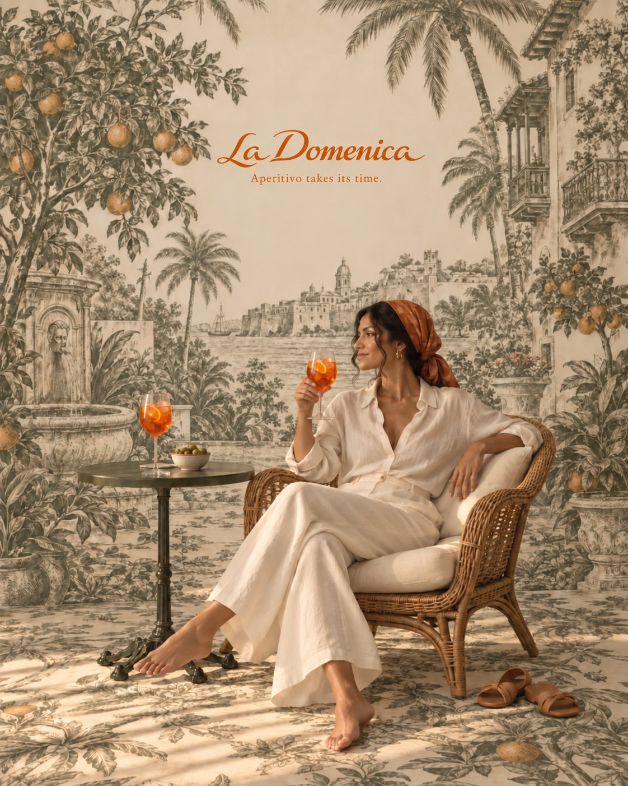

Italian aperitivo comes to Cartagena: meet La Domenica
A spritz, some olives and no rush. The Italian habit that will soon have a home in Cartagena.
Leer en español →
In Italy, aperitivo is a ritual: late in the afternoon, before dinner, a light and usually bitter drink with something to nibble. It's not a meal and not a party. It's a pause to wake the appetite and stretch the afternoon with friends.
What makes a good aperitivo
- The drink: bitter and refreshing; the spritz is the best known.
- To nibble: olives, something fried, something salty. Not much, but good.
- The hour: as the afternoon fades. In Cartagena, when the heat finally eases.
La Domenica: endless Sunday
La Domenica will be Casa Salvaje's daytime world: coffee when you wake, pizza for a very long lunch and aperitivo as the afternoon fades. A terracotta room, baskets on the wall, brass tables and no plans at all. Meet La Domenica.
When does it open?
Hours are to be confirmed. Join the guest list and you'll hear first. Meanwhile, Kanibal and SLVJ are waiting; see opening hours.